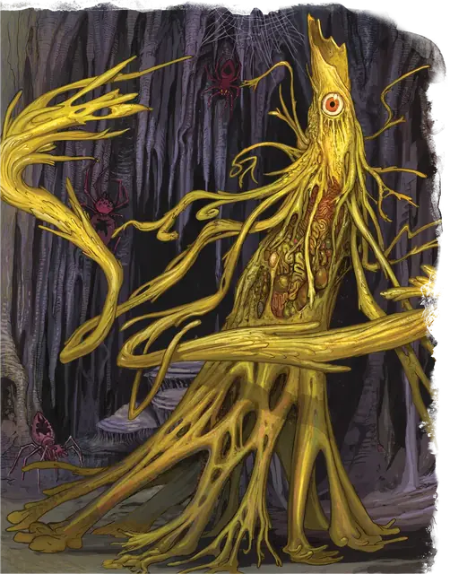

Йоклол
Yochlol
Среднее Исчадие (Демон), Хаотичное Злое

Класс Защиты 15 Инициатива +8 (18)
Хиты 153 (18к8 + 72)
Скорость 30 футов, Лазания 30 футов
| мод | спас | ||
|---|---|---|---|
| СИЛ | 15 | +2 | +2 |
| ЛОВ | 19 | +4 | +8 |
| ТЕЛ | 18 | +4 | +4 |
| мод | спас | ||
|---|---|---|---|
| ИНТ | 13 | +1 | +5 |
| МДР | 15 | +2 | +6 |
| ХАР | 17 | +3 | +7 |
Сопротивление урону Огонь, Холод, Электричество
Иммунитеты Яд; Отравленный
Чувства Тёмное зрение 120 футов, пассивное Восприятие 12
Языки Бездны, Подземный, Эльфийский
Опасность 10 (5 900 опыта; БВ +4)
Особенности
Восстановление демона. Когда йоклол умирает за пределами Бездны, её тело растворяется и в тот же миг заново возрождается со всеми Хитами где-то в Бездне.
Сопротивление магии. Йоклол совершает с Преимуществом спасброски от заклинаний и прочих магических эффектов.
Паучье лазание. Йоклол может лазать по сложным поверхностям, включая потолки, без совершения проверок характеристик.
Хождение по паутине. Йоклол игнорирует ограничения перемещения, вызванные паутиной, и знает точное местоположение всех других существ, находящихся в контакте с той же паутиной.
Действия
Мультиатака. Йоклол совершает две атаки Едкой плетью и может использовать Сотворение заклинаний, сотворяя заклинания Паутина или Подчинение личности, если оно доступно.
Едкая плеть. Бросок рукопашной или дальнобойной атаки: +8, досягаемость 10 фт. или дистанция 120 фт. Попадание: 25 (6к6 + 4) урона Кислотой.
Сотворение заклинаний. Йоклол сотворяет одно из следующих заклинаний, не нуждаясь в Материальных компонентах (заклинательная характеристика — Харизма, Сл спасброска заклинаний 15):
Неограниченно: Газообразная форма, Обнаружение мыслей, Паутина
1/день: Подчинение личности
Бонусные действия
Перевоплощение. Йоклол либо перевоплощается в Гуманоида Среднего размера или паука Среднего размера, либо возвращается в свою истинную форму. Её статистика не меняется в зависимости от формы. Снаряжение, которое она носит или несёт, не трансформируется.
Реакции
Токсичное бегство. Условие: По йоклол попадают броском атаки. Эффект: Йоклол снижает полученный от этой атаки урон вдвое (округляя вниз) и телепортируется в видимое ей незанятое пространство в пределах 30 футов от себя. Спасбросок Телосложения: Сл 15, каждое существо в 5 футах от точки назначения йоклол. Провал: Цель Отравлена до конца своего следующего хода. Пока цель Отравлена таким образом, она Недееспособна.
Бонус мастерства +4
Среда обитания Бездна
Сокровища Отсутствуют
Йоклол
Демон порочных желаний
Йоклол воплощают в себе губительную волю и заразительные идеи Бездны. В своём подлинном, тщательно скрываемом обличии они представляют собой бесконечно подвижные сгустки ядовитой плоти и струящихся щупалец, увенчанных одним злобным глазом. Гораздо чаще йоклол можно встретить в облике пауков или фанатичных последователей культов. С помощью магии и ядовитых речей они распространяют влияние демонических культов, совращают праведников и воплощают замыслы своих демонических владык. Йоклол испытывают особое удовольствие, когда втягивают ничего не подозревающих смертных в демонические интриги и сталкивают их друг с другом.
Большинство йоклол находятся на службе у Лолт и безоговорочно подчиняются власти Демонической Королевы Пауков, а тех немногих, кто осмеливается возразить, — без промедления уничтожают. Изредка они становятся слугами других демонических владык — особенно тех, кто славится коварством и изменчивостью, таких как Граз’зт, Джуиблекс и Заггтмой.
Несмотря на преданность своим повелителям, у йоклол есть собственные жестокие желания и амбиции. Преследуя личные цели, они могут солгать от лица своих демонических владык или раскрыть корыстные замыслы соперников, чтобы выслужиться перед хозяевами.